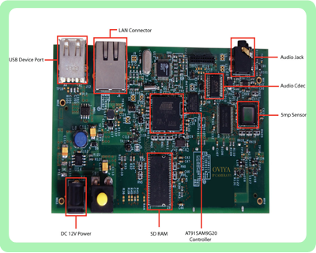

Processor Sub system
AT91SAM9G20, ARM926EJ-S™ ARM® Thumb® Processor, 400MHz 32-KByte Data Cache, 32-KByte Instruction Cache, Write Buffer
Memory Interface64MB SDRAM Volatile memory, 32MB NAND Flash memory
VideoMT9001 Micron Camera Sensor, 640x480, 720P image format support, Dual camera connected. Maximum pixel size 5MB.
ImagingBayer pattern format, RGB format, JPEG compress format
OS SupportLinux 2.6.30 kernel, UBoot, Ramdisk files system.
GPRS & ProtocolAirtel/Vodafone/BSNL gprs support, Image Transfe via FTP protocol.
USB2xFull size USB 2.0, USB OTG
Storage1x SD Card
NetworkingEthernet through RJ45 connector
DebugSerial RS-232, 1xUser LED.
PowerDC 12V
